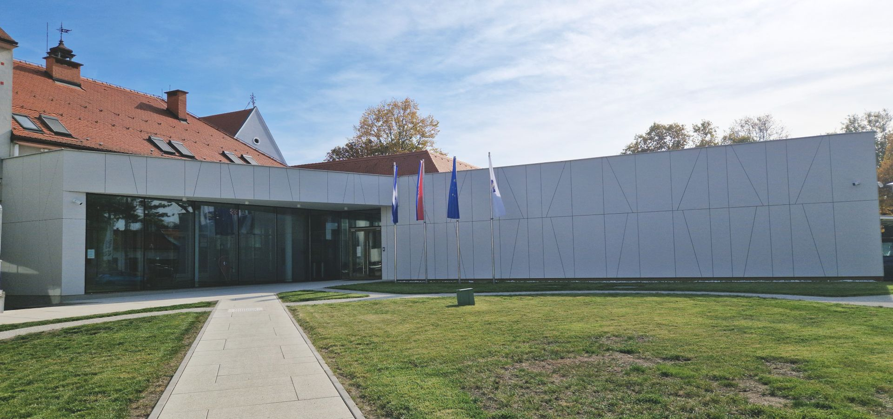

Općenito o Muzeju Brodskog Posavlja
Muzej Brodskog Posavlja čuva, istražuje i predstavlja povijest i kulturnu baštinu Slavonskog Broda i okolice.
Njegove zbirke obuhvaćaju predmete iz različitih razdoblja, koji posjetiteljima približavaju život i razvoj ovoga kraja.
Galerija slika